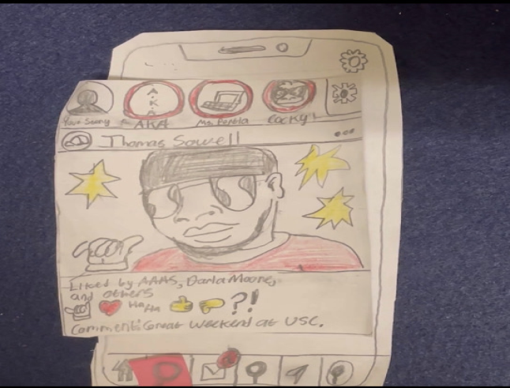

Problem Statement: USC Campus Social Network

You are a new student on UofSC’s campus and you want to start networking with others, but you are having trouble connecting with people, or you are having a problem with finding things to do on campus. Our solution is to create an app that allows users to connect with their peers, professors, alumni, clubs, workplaces, etc… on campus.
Affinity Diagram: Social Media Network

my group as a whole brainstormed ideas in order to create an affinity diagram about what groups and services we can put into our app.
Persona: 5 Personas for Social Media Network
-3.png)
Personas for people who are likely to use the UofSC Social Media App.
Storyboard: Phantom Troupe's storyboards
.png)
Storyboards on how each person with a different persona would the UofSC Social Media App.
Sketches
sketched Ideas on what the UofSC social media app would look like
Paper Prototype
A paper version video of how some screens of the UofSc social media app would look like.
Hi-Fi Prototype

A High Fidelity prototype of the UofSc Social Media up and its features.